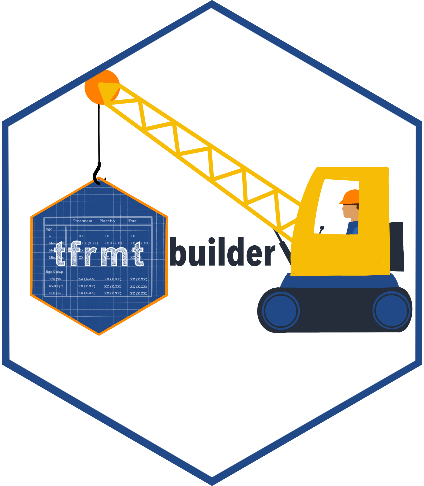

{tfrmtbuilder}
The {tfrmt} package provides a language for defining display-related metadata, which can then be used to automate and easily update output formats. {tfrmtbuilder} serves as an interface to the package, allowing users to quickly and easily modify existing or new table templates.
Supported workflows
Like {tfrmt}, {tfrmtbuilder} can be used to support a variety of workflows, including the following:
- Creating tables from scratch
- Create tables based on a template
- Modifying an existing table
Additionally, {tfrmtbuilder} supports tables created during study planning (mock tables) or later on after the analysis is complete.
App Features and Workflow
- Mock vs. non-mock toggle
- At the top of the app, use the toggle to specify whether you are generating a mock (no data values) or a table with data values.
- Initialize tab
- Load an existing {tfrmt} (JSON) or start fresh
- Define your data source:
- Auto [mock only]: Use auto-generated mock data
- Upload: Upload an existing dataset (most file formats)
- Note: If in ‘mock’ mode, this will serve as a shell with the numeric data value column ignored
- Example [mock only]: Use a pre-loaded example dataset
- Edit tab
- Select ARD column mappings
- Format table via the ‘plans’ and other functionality
- View the table as you modify
- Export tab
- Download {tfrmt} metadata (JSON)
- Download {tfrmt} table (HTML, PNG)
Usage
{tfrmtbuilder} can be installed and used with the following code:
# development version
devtools::install_github("GSK-Biostatistics/tfrmtbuilder")
# from CRAN
install.packages("tfrmtbuilder")
# Load app
library(tfrmtbuilder)
tfrmtbuilder()